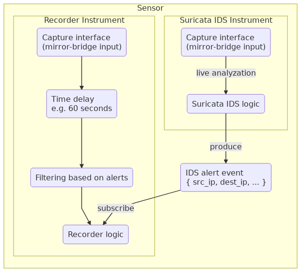

Provides packet recording capability to SensorFleet Sensor. Recording can be triggered by Suricata IDS Alerts or be continuous (full packet capture). When in trigger-based mode, Traffic Recorder will only record traffic related to the triggering event.
Recorder delays traffic to the temporary in-memory buffer in trigger mode. This allows investigating matching traffic related to triggering event before the event was even generated.
Recorder internally uses a modified Moloch capture engine. Moloch UI is also provided to the user. It can be used for forensics purposes, internal debugging and testing.
Provided standard Moloch UI can be directly used to download PCAPs, but an alternative method is also provided for automation purposes. Instrument UI has a custom HTTP download endpoint. The API will output PCAP files containing traffic matching the search criteria.
| Developer | SensorFleet Oy |
| Categories | Traffic Analysis, Traffic Recording |
| Network access type | Passive |
| Required interfaces |
|
| Dependencies | None |
| Related Instruments | Suricata IDS |
| Data retention | Recorder stores capture metadata (indexes) and raw captures for up to the configured data retention period. Temporary capture delay buffer is unaffected by data retention implementation. |
| Management UI | Yes |
A typical use case is to combine Recorder with Suricata IDS: only relevant traffic is recorded requiring much less system resources. Suricata IDS analyzes live traffic and produces alert events for traffic that matches the rule set.
Recorder receives the alert, creates a filtering rule internally and records matching IP traffic. Since Recorder has a delay buffer internally, no matching traffic is lost due to the delay from receiving Suricata alerts. Recorder can also be configured to continuous recoding mode (full packet capture) which requires much more system resources.
